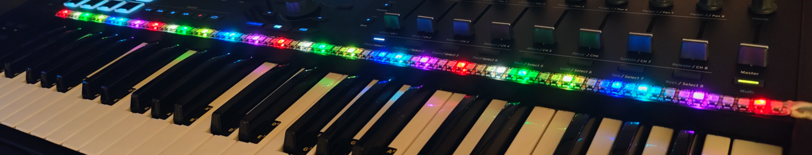
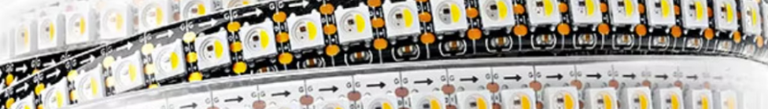

A little light. A new way to play.
See your
next note.
Find a scale. Follow a chord.
Let your keyboard light the way.
DreamScaler brings scales, harmony and colour to your keys with a standalone app and an LED strip.
Explore the app
MEET YOUR MUSICAL WORKSPACE
Less guessing.
More exploring.
From a first idea to a new favourite progression.
Everything in one focused workspace.
See DreamScaler in action.
Watch a demo of the standalone app and see how DreamScaler brings music to life.
- The standalone app in action
- Music, made visible
- Watch the demo on YouTube
A look inside the standalone app
A Python desktop app, designed for Windows, macOS and Linux.
A NOTE FROM THE CREATOR
It started with
a scale I couldn’t remember.
As an adult studying music theory, I struggle to remember scales. But to me, scales are a gateway to the magic of human feelings and emotions.
That’s why I created DreamScaler: to make those patterns visible, so I can explore them and shape the mood of my own music.
Tomas Mark · Creator of DreamScalerNon-binding pre-orders are open. No payment or commitment to purchase is required. We will contact you when your kit is available.
FROM SCREEN TO KEYS
Bring the light home.
The DreamScaler LED kit and standalone software.
RGBW LED strip · USB controller · Power supply · App


€169Kit + App
Pre-order your kit Non-binding pre-order by email. No payment now. Shipping quoted separately.OPTIONAL BITWIG STUDIO EXTENSION
Your scale. In light and in Bitwig.
Connect the LED strip to a MIDI channel on a track of your choice in Bitwig Studio. Get visual feedback as the actual MIDI notes playing in your DAW light up on the strip.
RGBW LED strip · USB controller · Power supply · App + Bitwig Extension
Requires Bitwig Studio.
(A Max for Live version for Ableton Live is currently in development.)
€199Kit + App + Bitwig Extension
Pre-order with BitwigNon-binding pre-order by email. No payment now. Shipping quoted separately.
NEW IN THE BITWIG EXTENSION
Set the key. Keep creating.
Sync root and scale between DreamScaler and Bitwig 6. Choose either direction or both, and let your keyboard light up with your music.
Quick setup
- Create a Project Remotes page named DreamScaler.
- Map control 1 to Root Key and control 2 to Scale, using their full ranges without inversion.
- Under Global Key in DreamScaler, enable Send, Receive, or both for root and scale.
21 DreamScaler scales have a Bitwig match. Without a match, the receiving side keeps its current scale and a notice appears.

Already have a keyboard? Keep playing it. DreamScaler adds a visual guide—your instrument makes the sound.